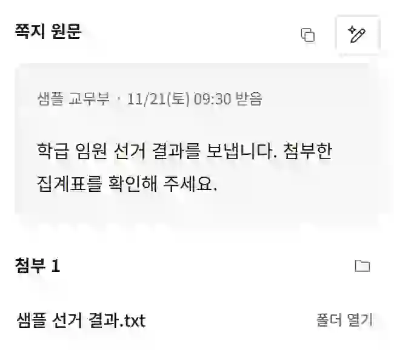

GOE 메신저용
GOE 메신저용쪽지 자동 정리
제출 기한을
따로 적을 필요가 없어요.
브리티·GOE와 AI를 연결해 두면, 새 쪽지에서 할 일과 날짜를 찾아 달력에 올려요. 같은 요청이 다시 오면 한 건으로 묶어 줘요.
체험학습 계획서를 오늘 오후 4시 30분까지 제출해 주세요.

 메신저 캘린더
브리티 메신저 캘린더
메신저 캘린더
브리티 메신저 캘린더
쪽지 정리 귀찮으셨나요?
브리티·GOE 쪽지를 앱이 읽고, 해야 할 일과 날짜만 골라 달력에 올려요.
샘플 쪽지 9통 정리해 보기직접 눌러 보기 · 1분
실제 앱과 같은 화면이에요. 쪽지를 가져온 뒤 아래 다섯 가지를 해 보세요.
브리티 메신저 캘린더☐ 마감● 일정기간● 중요
샘플은 미리 정해 둔 결과를 보여 줘요. 실제 앱에서는 연결한 AI가 쪽지를 읽고 나눕니다.
할 일 4개와 일정 2개는 날짜에 맞춰 들어갔고, 재안내 쪽지는 같은 일로 묶였어요. 공사 안내와 결산 공유는 할 일 목록에 끼어들지 않았고요.
쪽지 자동 정리
브리티·GOE와 AI를 연결해 두면, 새 쪽지에서 할 일과 날짜를 찾아 달력에 올려요. 같은 요청이 다시 오면 한 건으로 묶어 줘요.
체험학습 계획서를 오늘 오후 4시 30분까지 제출해 주세요.
원문과 첨부파일
달력에서 체험학습 계획서 제출을 누르면 쪽지 원문과 첨부 양식이 함께 나와요. 파일 이름을 누르면 양식이 열려요.

‘학급 운영’처럼 기억나는 단어만 검색해도 그 파일이 붙은 쪽지를 찾을 수 있어요.
보낼 말을 짧게 적으면 받은 쪽지에 맞춰 답장을 써 줘요. 읽어 보고 복사해서 보내면 돼요.
구글 캘린더를 연결해 두면 휴대폰 달력에서도 볼 수 있어요.
메모를 붙여 넣으면 앱이 할 일을 뽑아 줘요. 내용과 날짜를 확인하고 필요한 것만 등록하세요.
반복으로 등록해 두면 금요일마다 할 일에 올라와요.
학교를 골라 두면 학사일정과 오늘 급식이 업무 달력에 함께 나와요.
브리티를 쓰신다면 메신저의 환경설정 → 일반 → 뷰 모드에서 원 뷰로 바꾼 뒤, 캘린더에서 브리티 연결을 누르세요.
ZIP의 ‘모두 압축 풀기’를 먼저 하고, 새로 생긴 폴더에서 실행 파일을 열어 보세요.
메신저에 로그인한 상태에서 다시 연결해 보세요. 브리티는 환경설정 → 일반 → 뷰 모드에서 ‘원 뷰’를 선택해 주세요.
학교에서 GitHub 접속을 제한하는 경우가 있어요. 다른 PC에서 받아 학교에서 허용하는 방법으로 옮길 수 있어요.
쪽지를 분류할 때 확인된 이름·연락처와 웹 주소를 가린 뒤, 연결한 AI에 제목과 본문을 보내요. 첨부는 PC에 저장하고, 직접 골라 공유할 수 있어요.